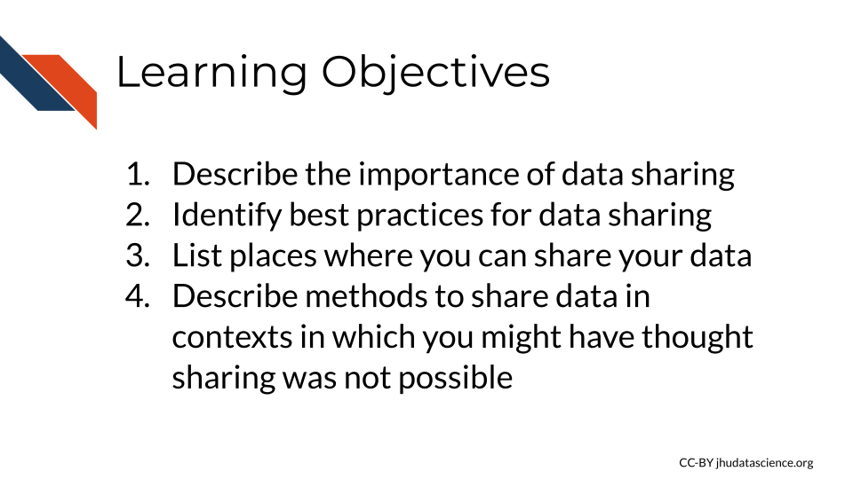
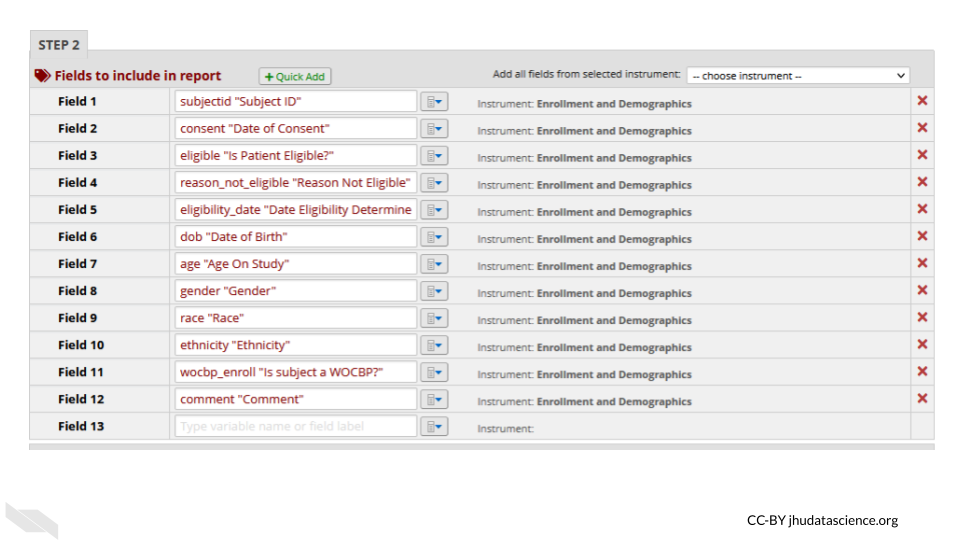

Chapter 4 Data Sharing
In this chapter we will discuss the importance of data sharing, best practices for data sharing, places where you can store your data, as well as methods to share data in contexts in which you might have thought sharing was not possible!

4.1 Data sharing is important!
Sharing data is critical for optimizing the advancement of scientific understanding. Now that labs all over the world are producing massive amounts of data, there are many discoveries that can be made by just using this existing data.
This is so important, that starting in January, 2023 the NIH will require specific sharing practices for data management and sharing. See the announcement here.
See this course for more information about how to comply with this policy.
Note that many institutes and funding agencies or mechanisms have requirements about how your data can be shared. Typically data sharing of protected data also requires Institutional Review Board (IRB) approval before the study is conducted. Ensure that you are following those requirements before you share your data.
There’s so many excellent reasons to put your data in a repository whether or not a journal requires it:
Sharing your data…
- Makes your project more transparent and thus more likely to be trusted and cited. In fact one study found that articles with links to the data used (in a repository) were cited more than articles without such information or other forms of data sharing (Colavizza et al. 2020).

- Helps your relieve your own workload so your email inbox isn’t loaded by requests you probably don’t have time to respond to.
- Allows others to gain even more insights from your data which shows funders that your data will be used to its maximum potential.

- It also provides more opportunities for others to replicate your results, which could help advance not only your career, but our understanding of science and medicine.
4.2 Benefits of data sharing
In addition to these benefits to yourself, data sharing has other far reaching benefits. It can help support faster advances in science and medicine, by reducing the need to collect new data, which reduces costs, time and effort, including the effort and burden that is required to collect data on or from patients.
It also helps support researchers at institutes that do not have as many resources to collect data.
Ultimately it can also therefore help patients benefit from research faster, as faster advances can be made through more efficient research.
![Data Sharing can also help with costs related to collecting data, reduces the time and effort to collect new data, including the burden on patients, it allows research to be more efficient, the same data can be used for multiple studies, which is especially helpful if combining different kinds of data and researchers don't necessarily have to ability to collect each kind of data, it supports researchers at insitutions that have less resources, and it helps patients get the benefits of research faster.’](resources/images/04-Data_Sharing_files/figure-html/1SRokLaGAc2hiwJSN26FHE0ZEEhPr3KQdyMICic8kAcs_g2fddd2b0ce1_0_0.png)
4.3 Data repositories
The best way to share your data is by putting it somewhere that others can download it (and it can be kept private when necessary). There’s many repositories out there that handle this for you.
Below are some of the standard repositories for data you should consider.
For a longer list of repositories, we also advise consulting this Guide on data repositories](https://www.nature.com/sdata/policies/repositories) published by Nature.
4.3.1 Genomic Data Repositories
- National Center for Biotechnology Information (NCBI)
- For microarray: GEO Gene Expression Omnibus (GEO)
- For RNA-seq: SRA (Sequencing Read Archive)
- European Molecular Biology Laboratory-European Bioinformatics Institute (EMBL-EBI)
- International Nucleotide Sequence Databases—DNA Data Bank of Japan (DDBJ)
4.4 Data Submission tips
Uploading a dataset to a data repository is a great step toward sharing your data! But, the dataset uploaded is unclear and unusable it might as well not been uploaded in the first place.
Keep in mind that although you may understand the ins and outs of your dataset and project, its likely that others who look at your data will not understand your notation.

To make your data truly shared, you need to take the time to make sure it is well-organized and well-described! There are two files you should make sure to include to help describe and organize your data project:
- A main README file that orients others to what is included in your data.
- A metadata file that describes what data are included, how they are connected.
4.4.1 Use consistent and clear names
- Make sure that sample and data IDs used are consistent across the project - make sure to include a metadata file that describes your samples in a way that is clear to those who might not have any prior knowledge of the project.
- Sample and data IDs should keep with standard formatting otherwise known in the field.
- Features names should avoid using genomic coordinates as these may change with new genome versions.
4.4.2 Make your project reproducible
Reproducible projects are able to be re-run by others to obtain the same results.
The main requirements for a reproducible project are:
- The data can be freely obtained from a repository (this maybe summarized data for the purposes of data privacy).
- The code can be freely obtained from GitHub (or another similar repository).
- The software versions used to obtain the results are made clear by documentation or providing a Docker container (more advanced option).
- The code and data are well described and organized with a system that is consistent.
Check out our introductory and advanced courses about reproducibility for more information.
4.4.3 Have someone else review your code and data!
The best way to find out if your data are useable by others is to have someone else look it over! There are so many little details that go into your data and projects. Those details can easily lead to typos and errors upon data submission and also can lead to confusion when others (or your future self) are attempting to use that data.The best way to test if your data project is usable is to have someone else (who has not prepared the data) is able to make sense of it.
For more details on how to make data and code reproducible tips, see our Intro to Reproducibility course.
4.5 Health care data sharing tools
4.5.1 REDCap (Research Electronic Data Capture)
REDCap is a very widely used browser-based software application for managing surveys and databases. It is very often used for clinical data. In fact, it is so widely used that there is a conference dedicated to it.
REDCap is a platform that allows for multi-institutional work and is compliant with multiple regulations including HIPAA, 21 CFR Part 11 (FDA data), FISMA (government data), and GDPR (data for the European Union). It was developed by a team at Vanderbilt University in 2004. It is not open-source, however it is free to use for non-commercial research (“REDCap” 2022).
You can find out more about how to use REDCap at the REDCap website which includes instructional videos and other resources.
There are several things to keep in mind when using REDCap to ensure that data privacy and security are protected.
- Roles
REDCap allows for various roles to be established for users on a project. Thus access to certain data and tasks can be restricted to certain individuals. As described previously, according to the Principal of Least Privilege, it is a good idea to restrict access to the smallest number of individuals necessary.
You can modify roles using the User Rights menu.
This will first show you who has what role on the project and their rights. You can click on an individual role to modify it.

Roles should be verified by your institutional review board (IRB) before beginning a study. Changes to roles should also be reviewed by your IRB.
- Reports
Reports that are exported can be customized to only show data that should be shared with the individual that you plan to share with. Please see the section on de-identification to better understand what data you might want to be restrictive about sharing. Again, the way you intend to share your data should be reviewed by your IRB before you begin your study.
For example, you might remove the dates from the following report:

- Auditing
REDCap keeps track of all data modifications, as well as data exports or report generations, in addition to keeping track of who performs those actions. This can be helpful for checking what has happened and when, in case anything happens that is unexpected or unintended. This is also great from a reproducibility or transparency standpoint - you have a record of any modifications to the data. This information can be obtained from the logging menu.
- Keep instruments short
If your instruments are too long, this can result in accidentally sharing data that you don’t intend to, simply because you have more data to sift through. This also makes it easier to generate reports only on specific data that you would like to share.
- Data can be locked
You can protect your data from accidentally being modified by locking specific data. Furthermore, at later stages of the project the data can no longer be modified.

Keep in mind that your institution likely has their own guidelines for how to use REDCap should you decide to use it. Also remember to verify what you plan to do with your institutional review board (IRB) before you begin the study.
4.6 Summary
In summary, in this chapter we covered the following concepts:
- Data sharing is important for advancing scientific understanding, transparency, and maximizing the value of your data.
- There are many data repositories where you can store and share your data, including general repositories like Data Dryad and FigShare, and repositories specific to certain data types like genomics or imaging data.
- When sharing data, be sure to organize and document your data well with things like a README file, consistent naming conventions, and metadata. Follow reproducibility practices whenever possible.
- Tools like REDCap can help manage clinical data while ensuring security, privacy, and reproducibility through features like role-based access controls, data auditing, and locking data after collection.
- Checking with your IRB first before sharing data, sharing code, or using new tools can help ensure that data is shared and accessed responsibly. Ideally such plans should be reviewed by your IRB before you begin a study. It is often possible to safely publicly share the code used to analyze protected data, as long as you don’t reveal aspects of the data in the code. Your local IRB may be able to help you learn how to do so.